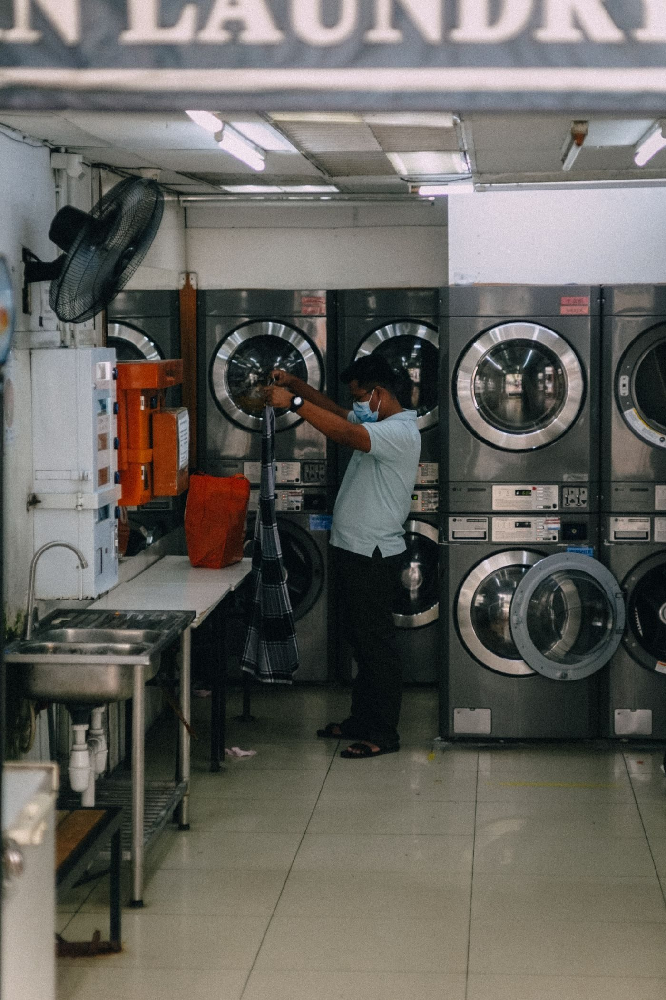
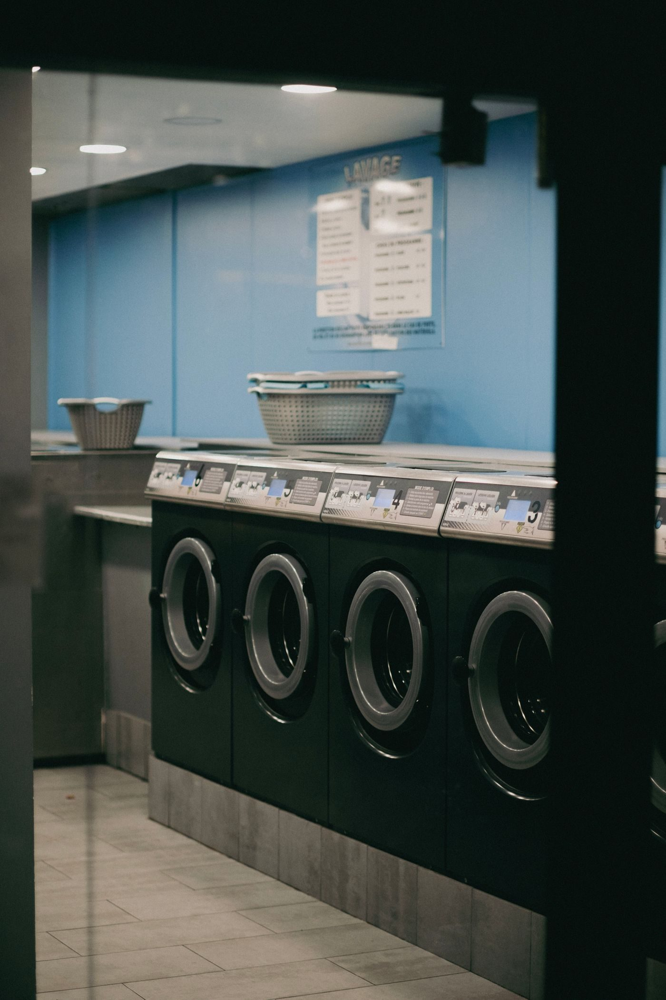

The laundromat, in stock photos


Shreveport, Louisiana
Fresh & Clean Laundry is a self-service laundromat in Shreveport, with Electrolux washers and dryers, 65 lb machines for king-sized comforters, blankets, and drapes, and a coinless laundry card system.

Fresh & Clean Laundry is a self-service laundromat in Shreveport. It offers self-service laundry with Electrolux washers and dryers, 65 lb machines for king-sized comforters, blankets, and drapes, and a coinless laundry card system. Call with questions about the machines or the card system.

2901 Milam St, Shreveport, LA
Sunday 9:00 AM to 6:00 PM, Monday to Saturday 8:00 AM to 8:00 PM